2024
— O INÍCIO
O grupo é formado e começam as primeiras experiências e ideias que dariam
origem ao projeto.
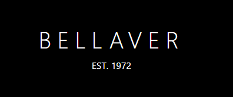
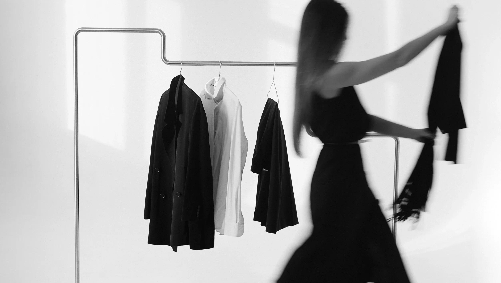
Tudo começou antes da Bellaver existir.
O grupo é formado e começam as primeiras experiências e ideias que dariam
origem ao projeto.
Surge o nome Bellaver e, com ele, nossa primeira identidade visual e o primeiro site da marca.
Mas o nome Bellaver também carrega um pouco de nós...
Inspirado em Monica Bellucci
Inspirado em Lana Parrilla
Inspirado em Sofia Vergara
Ao mesmo tempo, Bellaver guarda nossas próprias iniciais.
Três nomes, três histórias e uma ideia que começou entre nós.
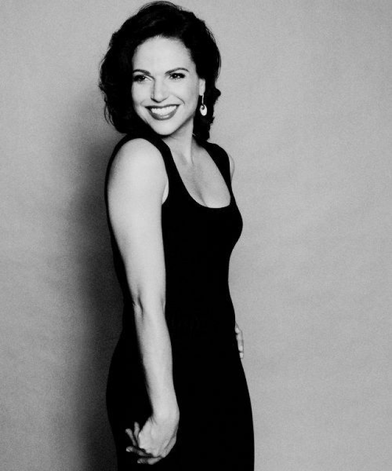
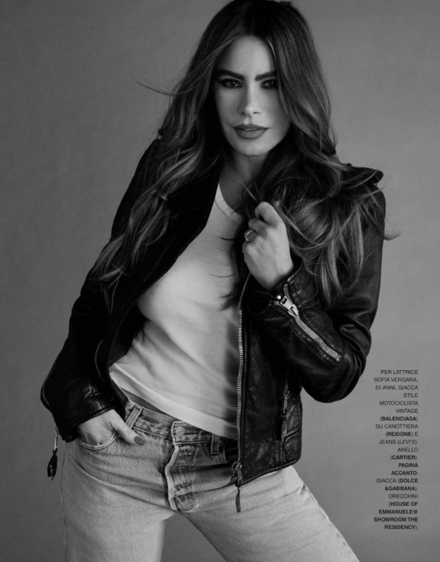
O projeto ganha uma nova dimensão.
Aprimoramos o site, expandimos sua experiência e desenvolvemos o aplicativo Bellaver,
conectando diferentes plataformas dentro de uma mesma identidade.
Como parte do nosso projeto atual, nasce a Bellahope, um programa criado dentro da Bellaver
que introduz a proposta de moda circular e impacto social.
Peças que não são mais utilizadas podem ganhar uma nova história, enquanto o valor arrecadado
pode ser direcionado para causas escolhidas pelas clientes.
Ao longo dessa trajetória, o projeto também cresceu em equipe. Hoje, a VerlanI reúne as pessoas
responsáveis por transformar a Bellaver em realidade.
ANA • LANA • EVELYN • KARINA • ISADORA • FERNANDA
Em três anos, uma ideia deixou de ser apenas um grupo e se transformou em uma experiência que une moda, tecnologia e propósito.
Quem transforma propósito em realidade.
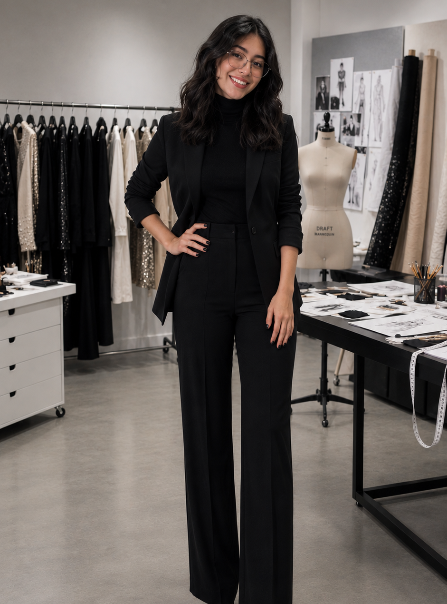
Scrum Master & Desenvolvimento
Atuação no projeto: Atuou como Scrum Master, contribuindo para a organização da equipe, acompanhamento das tarefas e desenvolvimento das soluções. Também participou da criação do site, prototipação no Figma, desenvolvimento do aplicativo, banco de dados e atividades relacionadas ao Prumo.
Áreas: Scrum • Site • Figma • App • Banco de Dados • Prumo
Habilidades: Organização • Criatividade • Desenvolvimento • Trabalho em equipe • Gestão de projetos
Formação: Técnico em Desenvolvimento de Sistemas
E-mail profissional: anajuliaaroucaalves@gmail.com
LinkedIn: www.linkedin.com/in/ana-julia-arouca-alves-344751364
Desenvolvimento & Design
Atuação no projeto: Contribuiu para o desenvolvimento do site e aplicativo, além da criação e organização das interfaces no Figma. Atuou na construção visual e funcional das soluções desenvolvidas pela equipe.
Áreas: Site • Figma • App • Prumo
Habilidades: Design • Desenvolvimento • Criatividade • Organização • Trabalho em equipe
Formação: Técnico em Desenvolvimento de Sistemas
E-mail profissional: lanateodorolessa@gmail.com
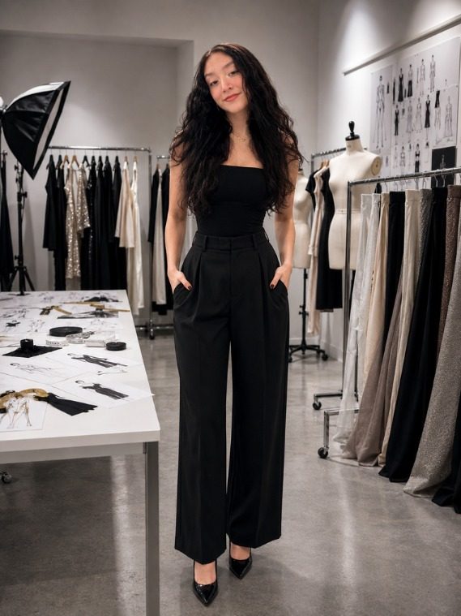
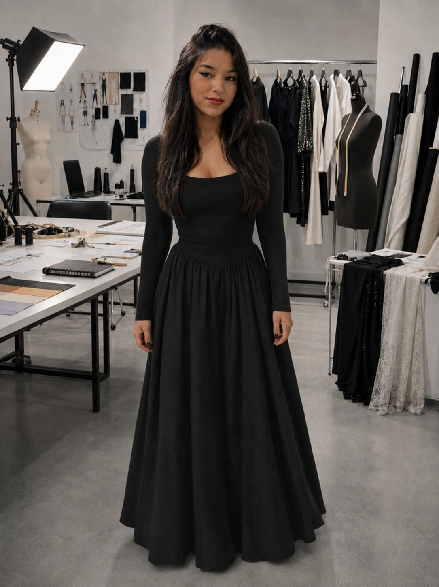
Design & Banco de Dados
Atuação no projeto: Atuou como auxílio no design das interfaces, contribuindo para a prototipação no Figma. Também participou da estruturação e organização do banco de dados do projeto.
Áreas: Auxílio Design • Figma • Banco de Dados
Habilidades: Design • Organização • Banco de Dados • Trabalho em equipe
Formação: Técnico em Desenvolvimento de Sistemas
E-mail profissional: evelyn.alvees0312@gmail.com
Design & Pesquisa
Atuação no projeto: Contribuiu com a criação das interfaces no Figma, desenvolvimento do aplicativo e realização de pesquisas que auxiliaram na construção e definição das soluções do projeto.
Áreas: Figma • App • Pesquisa
Habilidades: Pesquisa • Design • Criatividade • Organização • Trabalho em equipe
Formação: Técnico em Desenvolvimento de Sistemas
E-mail profissional: batistasaleskarina@gmail.com
LinkedIn: www.linkedin.com/in/karinabatsta
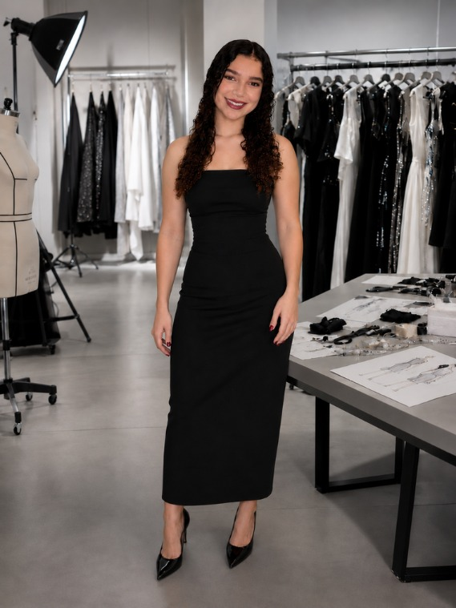
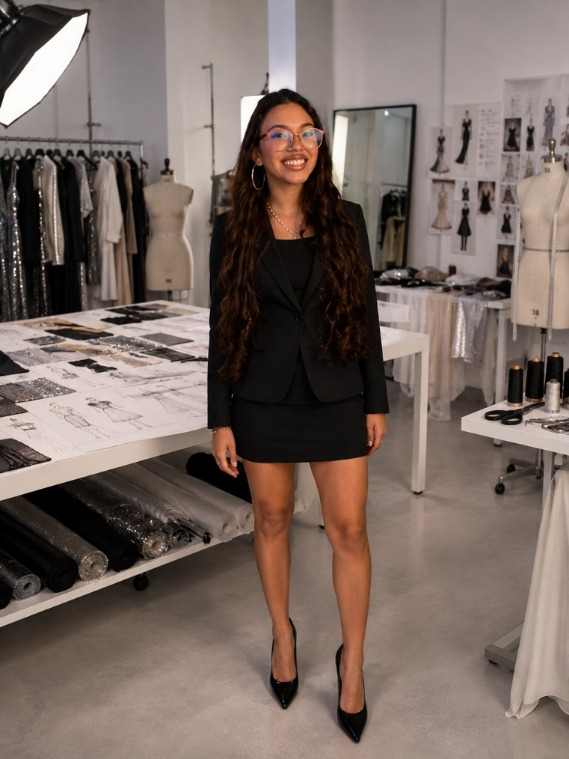
Desenvolvimento & Banco de Dados
Atuação no projeto: Atuou na prototipação das interfaces no Figma, desenvolvimento do aplicativo, elaboração da documentação e estruturação do banco de dados. Também participou das atividades relacionadas ao Prumo.
Áreas: Figma • App • Documentação • Banco de Dados • Prumo
Habilidades: Desenvolvimento • Banco de Dados • Design • Documentação • Organização • Trabalho em equipe
Formação: Técnico em Desenvolvimento de Sistemas
E-mail profissional: isouzabonifacio@gmail.com
LinkedIn: www.linkedin.com/in/isadora-souza-bonifacio-a32391438
Desenvolvimento & Documentação
Atuação no projeto: Contribuiu com a criação das interfaces no Figma, desenvolvimento do aplicativo e atividades relacionadas ao Prumo, participando tanto dos aspectos visuais quanto organizacionais do projeto.
Áreas: Figma • App • Prumo
Habilidades: Desenvolvimento • Documentação • Design • Organização • Trabalho em equipe
Formação: Técnico em Desenvolvimento de Sistemas
E-mail educacional: fernanda.c.costa9@aluno.senai.br
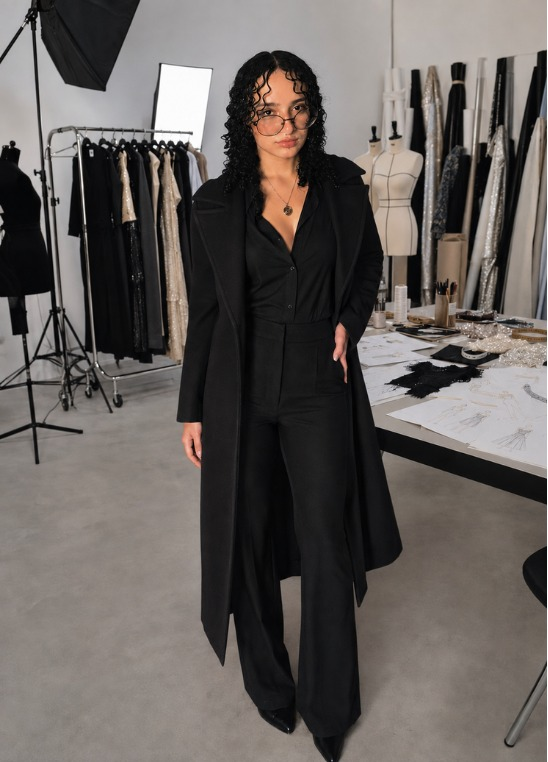
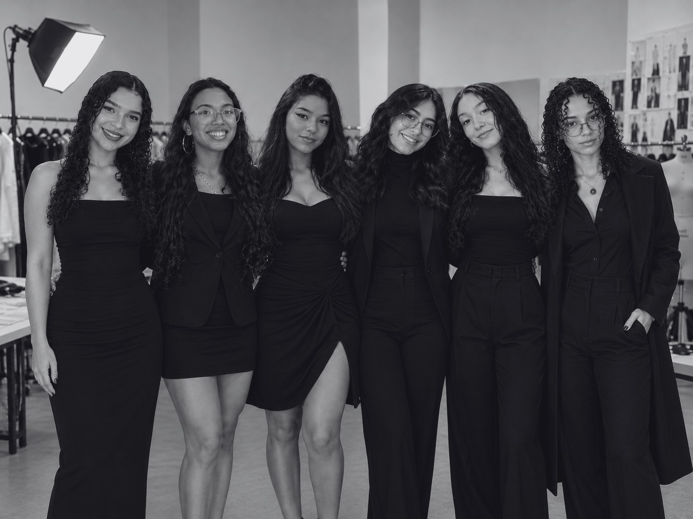
EQUIPE BELLAVER
2026
Este projeto representa não apenas onde começamos, mas tudo o que
somos capazes de construir quando uma ideia encontra propósito
Desde 2024, construindo novas histórias.
BAIXAR WORD